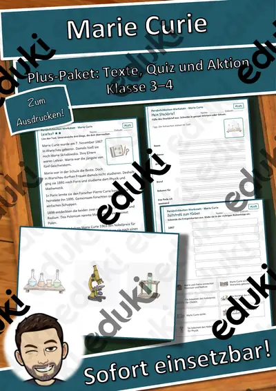
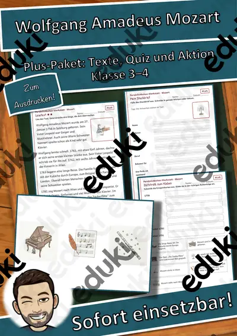
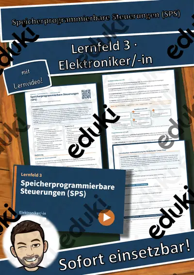
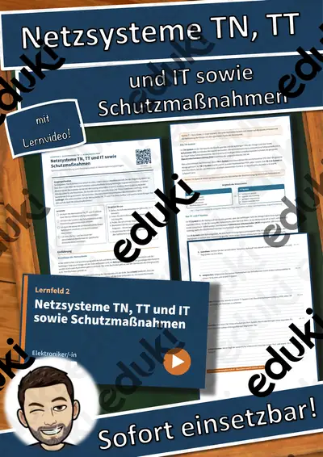
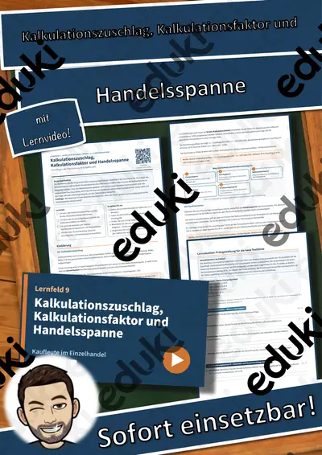
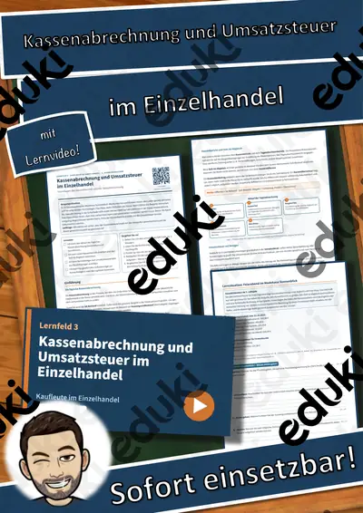
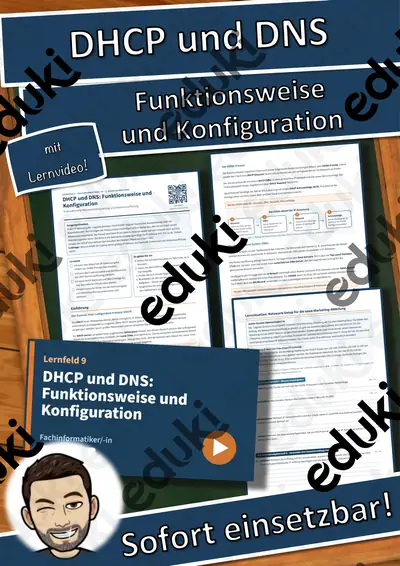
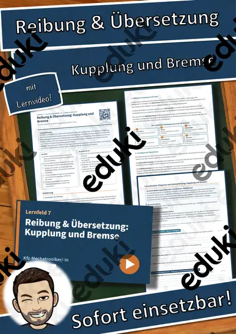

Persönlichkeiten-Werkstatt: Marie Curie – Steckbrief zum Lesen und Ausfüllen, Klasse 3–4 (kostenlos)
Persönlichkeiten-Werkstatt: Mozart – Steckbrief zum Lesen und Ausfüllen, Klasse 3–4 (kostenlos)

Persönlichkeiten-Werkstatt: Marie Curie Plus-Paket

Persönlichkeiten-Werkstatt: Mozart – Plus-Paket mit Texten in 3 Stufen, Quiz und Aktion, Klasse 3–4

LF 3 Elektroniker/-in: Speicherprogrammierbare Steuerungen (SPS) – Übungen, Lösungen + Lernvideo

LF 2 Elektroniker/-in: Netzsysteme TN, TT und IT sowie Schutzmaßnahmen – Übungen, Lösungen + Lernvideo

LF 9 Kaufleute im Einzelhandel: Kalkulationszuschlag, Kalkulationsfaktor und Handelsspanne – Übungen, Lösungen + Lernvid

LF 3 Kaufleute im Einzelhandel: Kassenabrechnung und Umsatzsteuer im Einzelhandel – Übungen, Lösungen + Lernvideo

LF 9 Fachinformatiker/-in: DHCP und DNS: Funktionsweise und Konfiguration – Übungen, Lösungen + Lernvideo

LF 11 Zahnmedizinische Fachangestellte: Heil- und Kostenplan sowie Festzuschüsse – Übungen, Lösungen + Lernvideo

LF 11 Medizinische Fachangestellte: Beratung zu Individuellen Gesundheitsleistungen (IGeL) – Übungen, Lösungen + Lernvid

LF 1 Medizinische Fachangestellte: Jugendarbeitsschutz und Mutterschutz in der Arztpraxis – Übungen, Lösungen + Lernvide

Bildkarten-Werkstatt: Haustiere – Merkspiel mit Bild- und Wortkarten (GRATIS), Klasse 1–3

Bildkarten-Werkstatt: Haustiere – Bild- und Wortkarten, Satzmuster, Spiel (GRATIS), Klasse 1–3

Bildkarten-Werkstatt: Gefühle – Merkspiel mit Bild- und Wortkarten (GRATIS), Klasse 1–3

Bildkarten-Werkstatt: Gefühle – Bild- und Wortkarten, Satzmuster, Spiel (GRATIS), Klasse 1–3

Bildkarten-Werkstatt: Haustiere PLUS – Klammerkarten, Lückensätze, Lernkontrolle, Klasse 1–3

Feriengrüße Fuchs: Tierbande Klassentier, Schreibanlass in 3 Stufen

Wichtel beschreiben: Schreibanlass mit 4 Wichtelbildern, Wortspeicher und Checkliste (Klasse 3–4)

Gruppenschilder Fuchs: Tierbande Klassentier mit Rollenkarten, Klasse 1–4

Feriengrüße Eule: Tierbande Klassentier, Schreibanlass in 3 Stufen

Gruppenschilder Eule: Tierbande Klassentier mit Rollenkarten, Klasse 1–4

Wichtelkärtchen: 24 Wichtelaufträge, Wichtelpost und Lose für die Klasse (Klasse 1–4)

Weihnachtsgeschichte als Domino: Religion in 2 Varianten mit Stichwörtern und Sätzen (Klasse 2–4)

Weihnachts-Logicals: 6 Knobelaufgaben zur Weihnachtsbäckerei in 3 Stufen (Klasse 3–4)

Adventskalender-Vorlage für die Klasse: 24 Türchen, Ideenkarten und Plan (Klasse 1–4)

LF 1 Verkäufer/-in: Unternehmensleitbild und Betriebsformen im Einzelhandel – Übungen, Lösungen + Lernvideo

Feriengrüße Löwe: Tierbande Klassentier, Schreibanlass in 3 Stufen

LF 1 Kaufleute für Büromanagement: Rechte und Pflichten in der Ausbildung – Übungen, Lösungen + Lernvideo

Klassentier-Paket Fuchs: Sachtext in 3 Stufen, Klassendienste, Lobkarten, Klasse 1–4

Klassentier-Paket Eule: Sachtext in 3 Stufen, Klassendienste, Lobkarten, Klasse 1–4

Gruppenschilder Löwe: Tierbande Klassentier mit Rollenkarten, Klasse 1–4

Klassentier-Paket Löwe: Sachtext in 3 Stufen, Klassendienste, Lobkarten, Klasse 1–4

LF 7 Kfz-Mechatroniker/-in: Reibung & Übersetzung: Kupplung und Bremse – Übungen, Lösungen + Lernvideo

Satzwerkstatt Winter Materialpaket: Schlangensätze, Purzelsätze, Würfelsätze – 3 Materialien in 3 Stufen (Klasse 1–2, DaZ)

Zahlenfunken Materialpaket: Blitzblick-Miniheft, Mengen-Klammerkarten, Zahlen-Bingo und Domino – Zahlen bis 10 sehen (Klasse 1)

Würfelsätze Winter: über 3000 Sätze würfeln und schreiben, mit Bildwürfel-Netzen in 3 Stufen (Klasse 1–3, DaZ)

Winter-Rätselwerkstatt Materialpaket: Wer bin ich? + Krimi-Rätselheft + Logicals – 3 Rätselhefte in 3 Stufen (Klasse 1–4)

Zahlenfunken: Zahlen-Bingo und Domino bis 10 – zwei Spiele zu Menge, Ziffer und Zahlwort in 3 Stufen (Klasse 1)

Logicals „Wer ist wer?“ im Winter: 11 Logikrätsel in 3 Stufen mit Kreuztabelle und Lösungen (Klasse 2–4)

Purzelsätze Winter: 36 Wörter-Durcheinander-Sätze ordnen mit Legestreifen in 3 Stufen (Klasse 1–2, DaZ)

Krimi-Rätselheft „Der verschwundene Klassenschlitten“: eigener Fall mit Spuren, Tabelle und Geheimschrift in 3 Stufen (Klasse 2–3)

Zahlenfunken: Mengen-Klammerkarten Zahlen bis 10 – 30 selbstkontrollierende Karten in 3 Stufen (Klasse 1)

Zahlenfunken: Blitzblick-Miniheft Zahlen bis 10 – Mengen auf einen Blick erfassen, 3 Stufen mit Lösungen (Klasse 1, DaZ)

Wer bin ich? Winter-Rätsel für Kinder: 12 Rätsel in 3 Lesestufen mit Bildkarten und Rätselkarten (Klasse 1–2, DaZ)

Schlangensätze Winter: 36 Sätze trennen und schreiben in 3 Stufen mit Schlangenkarten (Klasse 1–2, DaZ)

Kontinente-Ausstellung Gesamtpaket – alle 7 Kontinente: Tafeln + differenzierte Arbeitsblätter, Klasse 2–4

Kontinente-Ausstellung Antarktis – 3 Tafeln + differenzierte Arbeitsblätter (★/★★/★★★), Klasse 2–4
Keine Materialien gefunden – versuch einen anderen Suchbegriff oder Filter.